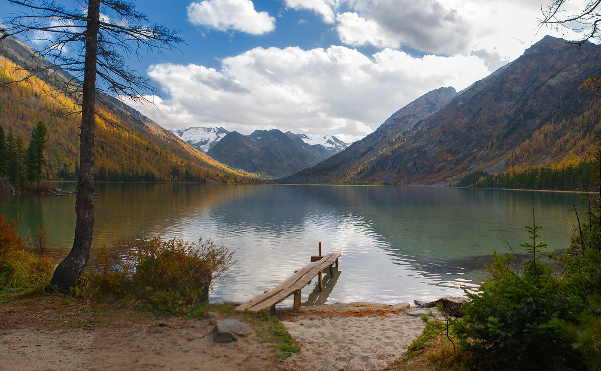

К Белухе ведет много дорог, и одна из них пролегает через Мультинские озера. Маршрут "К вершине мира: Кокса — Катунь — Мульта — Белуха" комбинированный, включает пеший, конный переходы, поездки на автомобилях и сплавы на байдарках. То есть всего понемногу, что можно получить от местного экстрима. При этом он дарит массу впечатлений, но не требователен к физподготовке, сюда допускаются и дети от 14 лет.
Маршрут идет через живописный район Усть-Коксинский, в окружении вершин Катунского хребта. Часть пути группе предстоит пройти на легких двухместных лодках — байдарках, управлять которыми обучит инструктор. В маршруте, рассчитанном на восемь дней, предусмотрен подъем к одному из самых известных озер Горного Алтая — Нижнему Мультинскому. Оно находится на высоте 1627 м над уровнем моря и является самым большим в системе пяти Мультинских озер. У маршрута красивейший финал — конная экскурсия на обзорную площадку горы Байда высотой около 2 тыс. м, откуда открывается вид на ту самую алтайскую вершину мира — гору Белуха.
Сложность:
легкий, опыт не обязателен, средняя сложность
| № п/п | Ближайшая дата | Цены. |
|---|---|---|
| 1 | 06.06.2023 | 43 000 руб |
| 2 | 06.07.2023 | 43 000 руб |
Какие зоны можно посетить во время похода? Вы можете прочитать всю информацию в статье